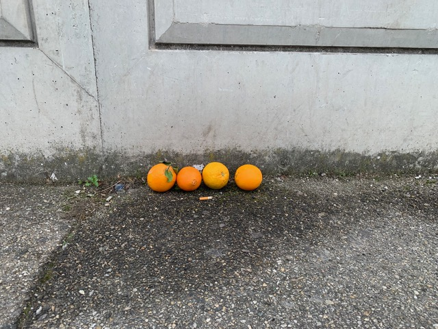
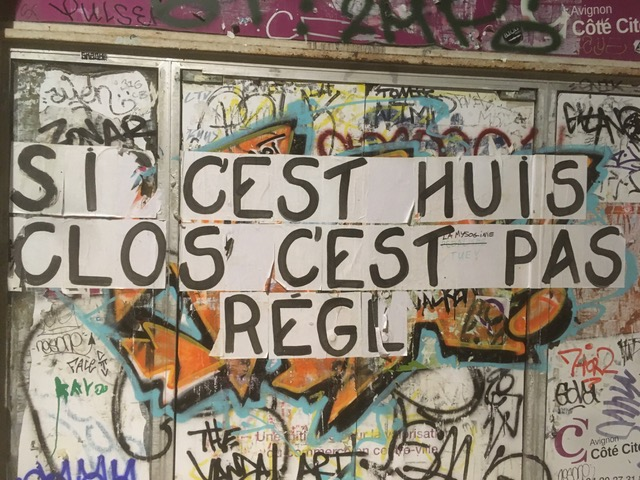
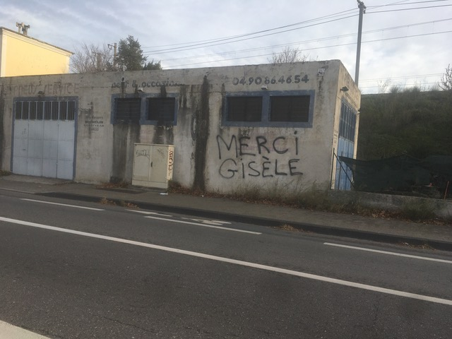
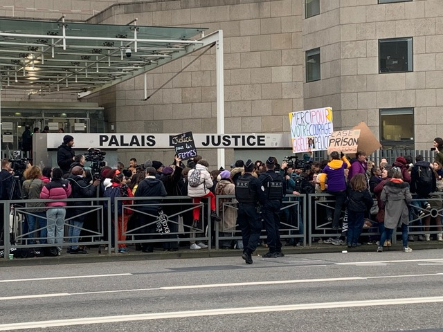
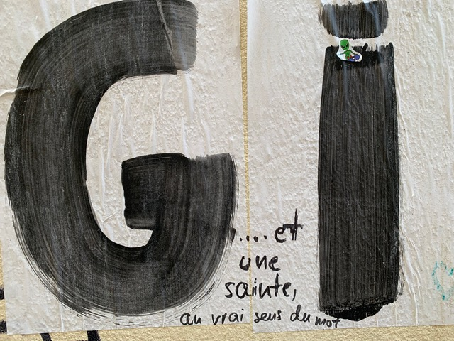

<!DOCTYPE html>
<html>
<head>
   <link rel="stylesheet" href="https://unpkg.com/leaflet@1.9.4/dist/leaflet.css"
     integrity="sha256-p4NxAoJBhIIN+hmNHrzRCf9tD/miZyoHS5obTRR9BMY="
     crossorigin=""/>
    <style>
        #container {
            display: grid;
            grid-template-rows: 1fr 3fr;
        }
        #map, #story {
     height: 100%;
        }
        #story {
            display: flex;
            flex-direction: column;
            gap: 10px;
			padding: 10px;
			margin:auto;
			overflow-y: auto;
        }
        #text {
            flex: 1;        
        }
        .storyLegend {
            border: 2px solid #411093;
            background: #fff;
            color: #000;
            padding: 10px;			 
        }
        .storyLegend button {
            border: 2px solid #411093;
            padding: 10px;
            font-size: 1em;
            width: 50px;
            margin: 5px;
            cursor: pointer;
        }
    </style>
</head>
<body>
    <div id="container">
        <div id="story">
            <div id="text"></div>
        </div>
        <div id="map"></div>
    </div>
    <script src="https://unpkg.com/leaflet@1.9.4/dist/leaflet.js"
     integrity="sha256-20nQCchB9co0qIjJZRGuk2/Z9VM+kNiyxNV1lvTlZBo="
     crossorigin=""></script>
	<script>
        // Initialisation de la carte
        var map = L.map('map').setView([43.944827228888734, 4.816506893623895],13);
        L.tileLayer('https://{s}.tile.openstreetmap.org/{z}/{x}/{y}.png',{attribution: '© OpenStreetMap'}).addTo(map);

        // Fonction pour créer des icônes colorées
        function createColoredIcon(color) {
            return L.divIcon({
                html: `
                    <svg width="32" height="32" viewBox="0 0 32 32" xmlns="http://www.w3.org/2000/svg">
                        <path d="M16 0 C24.8366 0 32 7.16344 32 16 C32 24.8366 24.8366 32 16 32 C7.16344 32 0 24.8366 0 16 C0 7.16344 7.16344 0 16 0 Z" fill="${color}" />
                        <path d="M16 5 C10.4775 5 6 9.48242 6 15.0114 C6 24.5152 16 31 16 31 C16 31 26 24.5152 26 15.0114 C26 9.48242 21.5225 5 16 5 Z" fill="white" stroke="${color}" stroke-width="2" />
                `,
                iconSize: [32, 32],
                iconAnchor: [16, 32],
                className: 'custom-svg-icon'
            });
        }
		    
        // Tableau des markers
        var markers = [
			 {
                coords: [43.94862, 4.80615],
                id: 0,
                text: `
                    <div>
                       <h3>Bienvenue !</h3>
        <p>Pour débuter la navigation cliquer sur "Suivant" en bas à droite</p>
                    </div>
                `,
              icon: createColoredIcon('#000000')
            },
            {
                coords: [43.94437, 4.8165],
                id: 1,
                text: `
                    <div>
                        <h3>  1. Plaidoirie de la défense en trois actes (11 décembre 2024) :<em> « L’opinion publique est venue pourrir ce procès »</em></h3>
                        <p> <Div Align= Justify><Strong>Acte 1. </strong>Réhabilitation des accusés : ces bons pères de famille-collègues-voisins le cœur sur la main ne sont pas des « garçons »  qui violent. D’ailleurs, l’un deux s’est présenté au domicile des Pelicot dans la journée, or « on ne viole pas à midi ! » . Le script du viol ancré, et à ancrer, dans les imaginaires met en scène des hommes marginaux et brutaux, ou des « monstres » , s’attaquant la nuit à une « belle fille »  dans une « rue sombre » .
Rappelons qu’en France, chaque heure 26 femmes sont victimes de viol, de tentative de viol, ou d’agression sexuelle. Soit toutes les 2 minutes 30. Dans 61% des cas, l’agresseur est connu personnellement : un voisin, un ami, un collègue et, <a href="https://mobile.interieur.gouv.fr/Interstats/L-enquete-Vecu-et-ressenti-en-matiere-de-securite-VRS" style="color: blue; text-decoration: underline; font-weight: none;" target="_blank">dans 28 % des cas,</a>, c’est un conjoint ou un ex-conjoint.<br>

<strong>Acte 2.</strong> Victimisation secondaire : Gisèle Pelicot  « cette femme si intelligente »  , n’aurait pas vu clair dans le jeu de son mari après des années de vie commune. S’en étonner et insinuer qu’elle est complice d’un jeu libertin… D’ailleurs, la victime fait du sein nu à la plage. Piétiner le statut de victime.
Rappelons encore que 3 sur 10 des victimes de viol, de tentative de viol, ou d’agression sexuelle gardent le silence. Pour les victimes qui portent plainte,  <a href="https://www.ipp.eu/publication/le-traitement-judiciaire-des-violences-sexuelles-et-conjugales-en-france/" style="color: blue; text-decoration: underline; font-weight: none;" target="_blank">86 % pour des plaintes</a> sont classées sans suite. <br>

<strong>Acte 3.</strong> Inversion de la culpabilité. En plus de l’acquittement, demande est faite que soit « lavé l’honneur »  de ces « garçons »  , victimes de Pelicot et de la « vox populi»  . Se retourner pour fustiger le public de la salle d’audience, pour la plupart des femmes journalistes et chercheuses. Discréditer leur présence, leur écriture, leur analyse, leur influence. Au-delà, délégitimer l’émoi et la colère des femmes. Car, rappelons enfin, que <a href="https://mobile.interieur.gouv.fr/Interstats/L-enquete-Vecu-et-ressenti-en-matiere-de-securite-VRS" style="color: blue; text-decoration: underline; font-weight: none;" target="_blank">moins de 1% des viols</a> rapportés par des femmes majeures ont fait l’objet d’une condamnation en 2022.<br></Div>
						<figure>

			<figcaptation style="font-style: italic; color: #666;">Devant le Palais de justice. Oranges amenées par quelques manifestantes, comme symbole des peines de détention souhaitées, et laissées contre un mur, sur le trottoir, le jour du verdict sur demande des CRS qui les envisagent comme de &laqo possible projectiles&raquo <br>Crédit Lachenal, décembre 2024"</figcaption>
        </figure></p>
                    </div>
                `,
                icon: createColoredIcon('#FF0000')
            },
            {
                coords: [43.944121, 4.816099],
                id: 2,
                text: `
                    <div>
                        <h3>2. Marie, cinquantenaire, employée au tribunal (le 11 décembre 2024) : <em>« Je suis une petite vacataire à 6 francs »</em></h3>
                        <p><Div Align= Justify>La victime, 51 accusés, leurs familles, 39 avocat·es, plus de 300 journalistes nationaux et internationaux et un large public de femmes. Pour comprendre comment accueillir un procès d’une ampleur soudainement amplifiée par la levée du huis clos, nous avons déployé notre ethnographie dans les coulisses organisationnelles de l’institution à l’écoute des bouleversements logistiques, professionnels et émotionnels. Nous revenons sur les travaux d’aménagement engagés avant l’ouverture du procès et leurs effets budgétaires sur le fonctionnement du tribunal : 150 000 euros alors que, « même plus d’argent pour des post-it » , confie une greffière, « mais il fallait ça, pour Gisèle Pelicot »  ajoute-t-elle. Puis, avec la levée du huis-clos, nous montrons que les murs du palais tremblent à nouveau : avec la réquisition à plein temps d’une salle dédiée à la retransmission du procès, un tiers des affaires qui devaient être audiencées est renvoyé, bouleversant les agendas des professionnel·les - et des justiciables – mais aussi l’usage de leurs espaces jugés comme confisqués, saturés et altérés par l’effervescence du public.
Au-delà des murs « qu’il faut pousser »  et des désordres provoqués, nous donnons à entendre, du début de l’enquête jusqu’au procès, comment la longue mobilisation du personnel en sous-effectif (juge d’instruction, avocat·es généraux du parquet, vacataires, magistrat.es de la cour, équipes de sécurité et de déféremmenti [4]) tourmente les conditions de travail, matérielles et humaines. Des collègues en moins, des vies personnelles à mettre de côté, nous dit-on. Parce que le surgissement de ce procès hors norme – non pas tant par sa nature ni son horreur : « ça c’est notre métier » rappellent des magitrat·es –, mais par son envergure médiatique – a fait résonner fort les dysfonctionnements ordinaires de l’institution et la lassitude qu’ils engendrent.</Div>
<figure>

<figcaptation style="font-style: italic; color: #666;"><Div Align= Justify>«Si c’est huis-clos, c’est pas réglo» , message collé par un collectif féministe. La présence de collages sur les murs de la ville, et surtout à proximité du tribunal, a été constante tout au long du procès. Chaque collage arraché était rapidement remplacé par un autre. <br>Crédit : Céline Lesourd, 8 décembre 2024.</Div></figcaptation>
</figure></p>
                    </div>
                `,
                icon: createColoredIcon('#00FF00')
            },
			{
                coords: [43.944768, 4.814093],
                id: 3,
                text: `
                    <div>
                        <h3>3. Chloé, trentenaire, journaliste de presse locale, le 17 décembre 2024. <br>
<Div Align= Justify><em>« Ça a suscité un peu de stress et de pression parce qu’il fallait[...] tirer notre épingle du jeu là-dedans et arriver à être aussi réactive que les autres avec évidemment une concurrence de dingue, des journalistes excellents. Il y avait un super esprit entre les journalistes et il y avait l’échange de contacts [...] on débriefait à la sortie des audiences, il y avait quelque chose… d’intéressant à pouvoir échanger sur ce qu’on avait vu et de ne pas être seule »</em></Div></h3>
                        <p><Div Align= Justify>Le procès déborde le tribunal et se rejoue aussi dans des annexes comme ce café-brasserie, un repère pour les journalistes, majoritairement des femmes, qui déjeunent aux mêmes tables, communiquent ensemble sur un groupe WhatsApp de plus de trois cents collègues, partagent leurs contacts et s’épaulent pour « angler » leurs articles. Tous·tes font corps pour traverser ce défi professionnel en déployant leur geste technique (qui diffère selon qu’il s’agisse d’écrire des articles, dessiner, produire des images ou du son, que ce soit à destination d’une antenne nationale ou locale) pour informer et faire comprendre – à commencer parfois dans leur propre équipe et salle de rédaction – que les violences sexuelles ne sont pas des faits divers mais des faits de société et qu’elles doivent être traitées comme tels.<br>
Si ce « geste technique » peut agir pour certain.es comme une protection, il n’en demeure pas moins que pour nombre de journalistes interrogés la colère, l’incompréhension, la peur, le souvenir des vidéos des viols projetées lors des audiences envahissent. Chacun·e cherche ses voies de dégagement : certain.es préfèrent « couper » et éviter les collègues, quand d’autres ne supportant pas la solitude d’une chambre d’hôtel se retrouvent quotidiennement autour d’un verre. Mais nos entretiens montrent encore que ces échos ne sont pas les mêmes, selon que l’on est un homme ou une femme journaliste. Donc selon sa place face au risque, à la peur et/ou au trauma du viol.</Div></p>
                    <br></div>
                `,
                icon: createColoredIcon('#C71585')
            },
			{
                coords: [43.944996, 4.813892],
                id: 4,
                text: `
                    <div>
                        <h3><Div Align= Justify>4. Aimée, une avocate de la défense (11 mars 2025) : <em>« J'y ai pensé hier, parce que j'ai regardé une série qui m'a fait penser [...] ça m'a fait un flash de ça, quoi. Et ça a remonté. Et je n’étais vraiment pas bien. Donc je me suis dit, putain, cette vidéo, elle m'a mis une … c'est un travail avec mon propre psy. Je n’ai pas eu beaucoup de ressources »</em></Div>
</h3>
                        <p><Div Align= Justify>Le restaurant QG des robes noires. Avec, de leur côté aussi, leurs groupes whatsapp, leurs pauses café partagées dans la salle des pas perdus, leurs soirées de décompression, leur force de travail mises en commun. Les avocat·es « font corps » car il leur faut « tenir le choc » à travers ce « long tunnel ». Mais la confraternité n’est pas homogène : il y a les notables du barreau et des très jeunes pénalistes ; il y a ces ténors qui s’emparent des micros quand de nombreuses avocates ont préféré la discrétion : « il n’y a pas de féminin pour ténor », rappelle au passage l’une d’ellesi [5]. Nos entretiens, menés après le procès, montrent comment ce « corps » est également fractionné par les différentes stratégies de défense mises en place, selon que les clients reconnaissent le viol ou défendent la « non-intentionnalité » – auquel cas faire le choix, ou non, de charger Dominique Pelicot comme le marionnettiste des crimes. Mais la ligne de faille la plus profonde est celle relative au respect du statut de victime : il y a des avocat·es qui pratiquent la victimisation secondaire et d’autres qui s’y refusent. Des éthiques modelées par des questions de genre ? de classe ? d’âge ? Le temps comprimé de l’enquête ne nous permet pas d’apporter des éléments suffisants pour répondre à ces interrogations. Mais des avocat·es arguent que la robe efface justement le genre, la classe et l’âge… Aimée, elle, conclut : « C’est une façon d’être (…), c’est politique ».</Div></p>
                    </div>
                `,
                icon: createColoredIcon('#FFFF00')
            },
			{
                coords: [43.949011, 4.809265],
                id: 5,
                text: `
                    <div>
                        <h3>5. Ludivine, la vingtaine, vendeuse dans un magasin de vêtements (9 décembre 2024) : <em>« J’ai regardé si mon père et mon frère n’étaient pas dans la liste »</em></h3>
                        <p><Div Align= Justify>Dès les premiers jours du procès, la liste des noms et prénoms des 50 accusés du procès Pelicot a été affichée au tribunal. Dupliquée, cette liste a été largement diffusée : mise en circulation sur les réseaux sociaux, parfois accompagnée de photographies des accusés, elle a aussi été imprimée et distribuée dans le village de Mazan, sur les parebrises des voitures.  <br>
Très vite en arrivant sur le terrain, nous découvrons les enjeux de proximité que soulève « la liste » et le levier méthodologique qu’elle constitue. Si certain.es de nos interlocuteu·ices se crispent ou affirment ne rien avoir à dire, poser alors la question : « Vous avez vu la liste ? » enclenche l’échange. Par peur, par méfiance, par colère, par curiosité, pour des raisons personnelles ou dans un cadre professionnel, on nous répondra l’avoir consultée : « C’était la rentrée scolaire, j’ai regardé la liste pour voir si des accusés étaient des parents d’élèves » confie une enseignante ». Évoquer « la liste » lève en effet les silences voire les réticences et ouvre à dire des liens d’interconnaissance avec des accusés : il y a l’électricien passé faire des travaux l’an passé, l’ancien infirmier, un client, le collègue d’un copain. « La liste » permet d’exprimer que, oui, c’est arrivé très près de chez nous et même, parfois, au plus près de soi : quelques personnes rencontrées se confieront sur des violences subies, d’autres aborderont des doutes intimes et la conscience aigüe que les violences de genre font système.</Div></p>
                    </div>
                `,
                icon: createColoredIcon('9370DB')
            },
			{
                coords: [43.948215, 4.807170],
                id: 6,
                text: `
                    <div>
                        <h3>6. Laura, la vingtaine, vendeuse dans un magasin de vêtements (10 décembre 2024) :<em> « Avec ce procès, je ne suis pas tombée du dixième étage. On ne découvre rien, nous les femmes »</em></h3>
                        <p><Div Align= Justify>Il existe un langage partagé chez les femmes avec lesquelles nous échangeons sur notre terrain, et ce quels que soient les profils sociologiques en présence (âge, profession, classe sociale…). Un langage tellement partagé que ça en devient troublant. Dans leurs paroles, nous identifions un usage du « nous » qui ne trompe pas. Ce quelque chose de commun aux femmes a à voir avec les violences sexuelles – à la fois l’expérience qu’elles en ont et la crainte qui y est associée. Avec ce procès, les femmes n’apprennent pas que les hommes violent. Elles le savaient déjà. Ce qui les bouleverse en revanche dans cette « affaire » c’est la dimension intime de la violence. Celle de la chambre à coucher et des drogues administrées dans des tasses de café, autour de la table familiale.  Celle des viols conjugaux et de tous ces hommes « du coin » à avoir répondu positivement aux invitations de Dominique Pelicot. Tous ces hommes, dont une vingtaine reste à ce jour non identifiée et dont l’ombre plane dans les vies de chacune. Ces hommes qui ont violé, et qui ne seront sans doute jamais inquiétés, ça peut être « tout le monde » comme nous l’expliquent deux employées de l’université : « un gars dans le bus », ou « ton mec, ça peut être ton mec aussi ». </Div></p>
                    </div>
                `,
                icon: createColoredIcon('#006400')
            },
			{
                coords: [43.950455, 4.813160],
                id: 7,
                text: `
                    <div>
                        <h3><Div Align= Justify>7. Un responsable du festival d’Avignon (23 janvier 2025) : <em>« Nous n’avons pas le sentiment que l’automne a été bouleversé, dans nos usages, par le contexte de ce procès dans la ville. Nous estimons même que, alors qu’il se situait à quelques kilomètres de nos bureaux, nous ne le ressentions qu’à travers les comptes-rendus quotidiens des médias, comme quelque chose très éloigné de nous, [...] nous n’avons pas une contribution suffisamment riche à vous apporter » (réponse écrite à nos questions)</em></Div></h3>
                        <p><Div Align= Justify>Il est plus facile de retranscrire, dans une enquête de terrain, ce qui a été dit que ce qui ne l’a pas été. Et pourtant il est essentiel de rendre compte des nombreux silences de notre enquête. Car il y en a eu beaucoup, devant nos demandes de rencontres, de portes closes, de fins de non-recevoir ou de refus d’entretiens. Les institutions notamment, alors qu’on aurait pu attendre d’elles qu’elles commentent un événement qui s’ancre dans la ville et qui en bouscule le quotidien, ont préféré nous garder à distance. Préfecture, mairie, commissariat de police, et aussi le bureau du Festival. Car Avignon est une ville de théâtre, internationalement connue, où des récits sur le monde sont mis en acte, et il nous tenait à cœur de le visibiliser. Ce sera quelques mois plus tard que la pièce Procès Pelicot, un oratorio sera montée, puis programmée à une place de choix au festival de l’été 2025 – le temps sans doute que la portée historique de cet événement judiciaire s’impose unanimement. Au cours de notre enquête, nous avons dû apprendre à faire avec ses silences, et à faire malgré eux. Nous avons dû réfléchir à la manière de les comprendre et de les traduire, afin de les écrire. </Div></p>
                    </div>
                `,
                icon: createColoredIcon('#00CED1')
            },
				{
                coords: [43.948970, 4.808847],
                id: 8,
                text: `
                    <div>
                        <h3>8. Paulette, la soixantaine, habitante de Mazan (10 décembre 2024) : <em>« C'est sûr que ça va laisser des traces »</em></h3>
                        <p><Div Align= Justify>Dans une boutique de sous-vêtement du centre-ville d’Avignon, une femme d’une soixantaine d’années se joint à notre conversation. Nous lui demandons si elle est avignonnaise. Elle nous répond que non : « d’à côté », « de la campagne » ajoute-t-elle. Silence. Puis : « De Mazan ». Et de répéter, les lèvres tremblantes : « de Mazan, (…) c'est sûr, ça va laisser des traces ». Paulette aborde timidement les propos sordides du maire
<a href= "https://www.lemonde.fr/societe/article/2024/09/20/apres-avoir-minimise-l-affaire-des-viols-de-mazan-le-maire-de-la-commune-presente-ses-excuses_6325385_3224.html"style="color: blue; text-decoration: underline; font-weight: none;" target="_blank"> « personne n’est mort »</a>, elle ne les cautionne pas. Elle évoque aussi la lettre de demande de démission que des habitant.es ont adressée au maire. Des fêlures dans le village qui recoupent, oui, acquiesce-t-elle, des divergences partisanes politiques. À Mazan, notre enquête – ardue compte tenu de ces tensions et de l’exaspération des habitant.es causée par la saturation médiatique – rend compte des effets réputationnels du procès sur le village. Si certain.es comme Paulette expriment de la tristesse et de la honte, ce sont surtout d’autres réactions et stratégies qui sont déployées, à l’inverse, pour réparer l’atteinte à la renommée du village : défendre le maire – parce qu’il est harassé par la presse et/ou parce qu’il n’est « pas le couteau le plus affûté du lot » – ou dédouaner ses concitoyens – en rappelant que personne localement n’est « allé faire le couillon là-bas [chez les Pelicot] ». Mais, plus fréquemment, les habitant.es interrogées s’attèlent à dissocier Mazan-procès et Mazan-village par des opérations de mise à distance : en le sous-qualifiant de fait divers – à grand renfort de récits d’autres faits divers comme il y en a (eu) dans le village et aux abords – et/ ou en le délocalisant : l’affaire se passe sur internet, les Pelicot sont des Parisiens, qui n’habitent pas le centre historique du village.</Div></p>
                    </div>
                `,
                icon: createColoredIcon('#00008B')
            },			
				{
                coords: [43.943605, 4.811939],
                id: 9,
                text: `
                    <div>
                        <h3>9. Lilian, 28 ans, conducteur de Baladine, navette gratuite du centre-ville (10 décembre 2024) : <em> « Le procès a changé pas mal mon travail, ça a modifié les lieux où je peux faire mes pauses notamment. Parce que maintenant, derrière le tribunal, c’est là où se gare le bus des connards »</em></h3>
                        <p><Div Align= Justify>Il y a deux choses dans cette citation. Il y a d’abord, pragmatique, le constat d’un bouleversement dans la ville en lien avec le procès. Les questions de circulation et de stationnement sont souvent mentionnées par les Avignonnais.es que nous rencontrons : les ralentissements aux abords du tribunal, les bouchons les jours de manifestations, les parkings interdits… C’est souvent même dans les voitures qu’entre proches on commence à parler du procès, parce qu’il encombre – concrètement – la ville. Et puis dans la phrase de Lilian, il y a aussi ce « bus des connards » pour faire référence au convoi quasi-quotidien des accusés qui comparaissent en détention et qu’il faut acheminer au tribunal depuis le centre de rétention du Pontet. Ce bus, Tahar, un employé de la ville, en parle aussi quand nous le rencontrons. Parce qu’il le croise chaque jour. Lui, nous dit « baisser les yeux » pour ne surtout pas croiser ceux de « ces grands malades, qui doivent se faire soigner ». La liste des mots utilisés par les hommes que nous rencontrons pour qualifier les accusés est parlante : « pervers », « barjots », « malades », « connards », « salauds », « tarés »... On leur souhaite le pire : la castration, des peines longues, et même la mort parfois. L’enjeu rhétorique est celui de l’altérisation : il s’agit pour beaucoup d’hommes de se distinguer des accusés, qui sont des hommes eux-aussi, et de montrer qu’ils ne sont pas « comme eux ». Ce réflexe masculin a pour effet de faire écran à toute remise en question, et d’empêcher de voir ce qu’ont de tellement ordinaires, familières même, les situations de viol. </Div>
<figure>

<figcaptation style="font-style: italic; color: #666;"><Div Align= Justify>A l’arrière du tribunal. Signalétique conçue spécialement pour le procès afin d’interdire le stationnement à l’arrière du palais de justice, l’espace étant réservé pour accueillir le convoi des accusés comparaissant en détention. </Div></figcaptation>
</figure></p>
                    </div>
                `,
                icon: createColoredIcon('#A52A2A')
            },
				{
                coords: [43.941777, 4.815515],
                id: 10,
                text: `
                    <div>
                        <h3>10. Nina, 3 ans, à sa mère (18 décembre 2024) :<em> « Dis maman c’est qui Dominique ? »</em></h3>
                        <p><Div Align= Justify>Le procès s’invite dans les foyers avignonnais, à la table du petit déjeuner comme aux dîners de famille. Difficile en effet de passer à travers. Au quotidien, les murs recouverts de collages, les embouteillages aux abords du tribunal, les actualités à la radio ou à la télévision sont autant de rappels de ce qui a lieu au Palais de justice. La parole circule. C’est ce dont témoignent beaucoup de personnes rencontrées sur notre terrain. Dans l’intimité d’un chez-soi, on se pose des questions et on réfléchit à ce qu’on a envie de partager, en couple ou en famille. Certaines mères se retrouvent, plus tôt qu’elles ne l'auraient voulu, à expliquer à leurs petites filles ce que sont les violences sexuelles. D’autres, malgré elles, s’inquiètent et renforcent les mises en garde et dispositifs de contrôle auprès de leurs adolescentes. Les garçons et jeunes hommes restent étonnamment indemnes de ces prises de paroles engendrées par la tenue du procès, comme si le sujet ne les concernait pas directement. Il « préfère jouer au tennis » nous confie la mère d’un adolescent, à qui elle n’a pas voulu parler du procès, tandis qu’elle en parlé avec sa fille. Même la possible future inscription du consentement dans la loi (effectivement adoptée en octobre 2025) est envisagée négativement par certaines mères comme un fardeau à porter pour leurs fils, et une entrave à leur légèreté. « Comment vont faire nos garçons ? » s’inquiète Annick, la cinquantaine, travaillant à la mairie. </Div></p>
                    </div>
                `,
                icon: createColoredIcon('#00FF00')
            },
				{
                coords: [43.949760, 4.815960],
                id: 11,
                text: `
                    <div>
                        <h3><Div Align= Justify>11. Cécile, la cinquantaine, personnel administratif de l’Université d’Avignon (5 décembre 2024) : <em>« Ça m’a fait réfléchir. J’ai commencé à penser à ma sœur. Et je lui ai demandé... Je lui ai posé la question, à propos de notre oncle… Celui qui lui avait… Et elle m’a dit ‘ah tiens, oui, c’est vrai’. Quand j’ai raconté ça [les souvenirs de l’agression] à ma sœur, elle a dit « oui ». Elle a confirmé. Et qu’il y avait eu une autre fois, dans la maison de Mamie. Pour elle, cette discussion a été une révélation. […] Ma sœur… elle ne va pas bien. Elle n’a jamais eu d’enfant. Elle est en couple, mais ça se passe mal. Sa vie ne va pas bien »</em></Div>
</h3>
                        <p><Div Align= Justify>L’inceste repose sur la silenciation : il se produit et se reproduit dans des familles socialisées à le taire. La famille Pelicot ne fait pas exception à cette règle. Face aux révélations, en paroles et en images, des violences sexuelles infligées aux enfants sur plusieurs générations dans sa famille, Gisèle Pelicot s’est tue. Silence devant les témoignages de ces belles-filles sur les comportements de Dominique Pelicot envers elles et leurs enfants. Silence devant la colère de sa fille et sa demande que soit reconnu et jugé, aussi, le père incestueux. C’est dans ses livres (Et j’ai cessé de t’appeler papa, 2022 et Pour que l’on se souvienne, 2025) que Caroline Darian évoque sa solitude face au mutisme de ses proches. <br>
L’inceste restera le grand absent de ce procès, seulement convoqué par les avocat·es de la défense à propos des accusés victimes dans leur enfance, en tant que circonstance atténuante pouvant expliquer les viols. Indicible toujours, l’omniprésence des violences sexuelles faites aux enfants dans les familles. Indicible toujours, le fait que ces violences, imbriquées avec les violences sexuelles faites aux femmes, font système et structurent l’ordre social.<br>
Et pourtant, face à cette chape de silence qui pèse sur le procès, il y a quelques témoignages qui laissent croire à des fissures. Celui de Cécile en fait partie : le procès a été pour elle l’occasion d’une conversation, entre sœurs, qui n’avait jamais eu lieu et d’une reconnaissance de l’inceste dont l’une d’elles a été victime petite. Même imperceptibles dans le grand brouhaha du procès, ces récits qui s’avouent et se partagent, timidement et dans l’intimité, peuvent constituer des basculements immenses à l’échelle des personnes et de leurs familles. </Div>

<figure>

<figcaptation style="font-style: italic; color: #666;"><Div Align= Justify>Avenue Montfavet, 6 décembre 2024 (...) “Merci Gisèle”, graffiti apposé sur un mur juste en face de la maison que nous louons. <br> Photo : Céline Lesourd, 6 décembre 2024</Div> </figcaptation>
</figure>
</p>
                    </div>
                `,
                icon: createColoredIcon('#40E0D0')
            },
				{
                coords: [43.944256, 4.815858],
                id: 12,
                text: `
                    <div>
                        <h3> <Div Align= Justify>12. « Discours du Collectif des droits des femmes 84 et du Planning familial, parvis du tribunal, (14 décembre 2024) : <em>« Nous, femmes ordinaires, nous, venues soutenir Gisèle Pelicot, on nous a reproché d'être trop visibles, trop virulentes, on nous a reproché nos cris inscrits sur les murs, nos banderoles accrochées sur les remparts comme des blessures toujours ouvertes. Nous n'en pouvons plus, nous n'en voulons plus de cette justice qui [...] nous renvoie chez nous avec du classé sans suite »</em></Div></h3>
                        <p><Div Align= Justify>Devant le tribunal, ce samedi de décembre, des femmes anonymes affrontent le froid brandissant des pancartes. « Ta main sur mon cul : ma main dans ta face ». D’autres écrivent « un mot doux » pour Gisèle et l’accrochent aux grilles du tribunal. Des femmes anonymes d’Avignon, Marseille, Sète, Paris, Nancy, Barcelone ou Berlin qui veulent que « ça change ». Toutes ont répondu à l’appel à manifester d’autres femmes œuvrant dans différents collectifs et associations : droits DES femmes Vaucluse (CDF84), NousTous·tes 84, le Planning familial 84, le pôle LGBTQIA+ Vaucluse …<br>
Dans la rue comme au tribunal, sur ce très vaste ensemble de femmes ont été apposés les raccourcis de « militantes », « militantes féministes », « féministes ». Notre ethnographie montre la complexité de ce public. D’un collectif à l’autre, si les ressorts de la mobilisation sont communs, les actions, les stratégies et les espaces investis diffèrent. Certains groupes, comme Osez Le Féminisme 84, privilégient les collages dans la ville quand d’autres, comme NousTous·tes, se rassemblent en chorales de soutien à la sortie du tribunal. D’autres associations suivent le procès de loin mais portent leur voix en manifestation. Le répertoire d’action est aussi varié que les positionnements politiques de ces collectifs, et leur sociologie diffère.</Div>

<figure>

<figcaptation style="font-style: italic; color: #666;"><Div Align= Justify>Palais de justice d’Avignon devant lequel on aperçoit des manifestant.es.<br> Photo : Perrine Lachenal, 19 décembre 2024.  </Div></figcaptation>
</figure>
</p>
                    </div>
                `,
                icon: createColoredIcon('#DDA0DD')
            },
				{
                coords: [43.95094, 4.80768],
                id: 13,
                text: `
                    <div>
                        <h3>13. Père Gabriel, dans la cure de sa paroisse (9 décembre 2024) : <em>« Il y a une forme de geste sacrificiel justement, elle accepte pour elle et pour, comme dit le Christ, pour la multitude… des femmes. Cette levée du huis clos et de dire qu’elle voulait que la honte change de camp, c’était [...] faire don de son histoire [...] et plutôt que d’en avoir honte, en s’en rendant peut-être fière, c’est ça le renversement, je veux parler du Christ, c’est le renversement pascal ».</em></h3>
                        <p><Div Align= Justify>Gisèle Pelicot, cette femme, qui se qualifie elle-même « d’ordinaire », en ouvrant les portes du tribunal devient en quelques semaines une figure publique exceptionnelle de « courage » et de « force » incarnant, pour de nombreuses autres femmes, la victime à laquelle s’identifier pour oser dire, nommer et affronter les violences sexuelles de leurs propres parcours. Pour nombre de nos interlocuteur·ices, Gisèle Pelicot est une héroïne qui aimante ou impressionne : « on a envie de la toucher » confie une femme ou, à l’inverse, « on n’ose pas la regarder dans les yeux » dit un journaliste. Mais la victime a évidemment ses détracteur·ices. Il y a ceux et celles qui, moins crédules que le quidam, disent savoir. Savoir de leur place d’avocat ou de médecin que le dossier n’est pas si clair que ça, qu’elle n’aurait pas tout dit. Qu’il est impossible d’être restée dans une telle errance médicale, ou d’être violée sans en percevoir les traces sur son corps. À ces censeurs se joignent ceux et celles qui mettent en doute l’intégrité de la victime : on critique sa moralité (aurait-elle eu un amant ?), on parie sur sa vénalité (toute cette affaire lui rapporte de l’argent). Des mots, des doutes, des attitudes qui sous-tendent donc que ce sont les « mœurs » des victimes qui expliquent leurs viols et qu’affronter les violences subies, au tribunal, reviendraient pour les femmes à de juteux investissements. Quels que soient les arguments, pour glorifier ou humilier, pour fabriquer ici des bonnes victimes ou ici des mauvaises, le risque est de confisquer aux femmes leurs histoires, leurs mots, leurs actes, leur choix et leur volonté propre.</Div>

<figure>

<figcaptation style="font-style: italic; color: #666;"><Div Align= Justify>Fragment de collage “Gisèle est une sainte au vrai sens du mot”</Div> </figcaptation>

<figcaptation style="font-style: italic; color: #666;"><Div Align= Justify>Commentaire posé sur un le collage “ On la disait brisée, c’est une combattante Gisèle”.</Div> </figcaptation>
</figure></p>
                    </div>
                `,
                icon: createColoredIcon('#FF8C00')
            },
				{
                coords: [43.94212, 4.80525],
                id: 14,
                text: `
                     <div>
                        <h3>14. L’une d’entre nous, carnet de terrain (6 décembre 2024) : <em>« À la gare d’Avignon, en repartant pour le week-end, je lis ‘viol A’ à la place de ‘voie A’. Pas mécontente de retrouver ma vie, et à la fois cette drôle de sensation d’être accrochée au sujet, de ne pouvoir penser qu’à lui, qu’à notre enquête. Ça prend de la place, ça déborde ».</em></h3>
                        <p><Div Align= Justify>Il n’y avait rien d’habituel, pour nous chercheur.es en anthropologie, dans cette décision collective de partir pour Avignon à l’automne 2024. La force de l’élan initial nous a presque surpris.es. Ce terrain de recherche s’est imposé à nous : il fallait “y être” – il fallait “en être” – et nous avions quelque chose à y faire avec les outils des sciences sociales. Nous n'imaginions pas, sans doute, l’intensité de ce que nous allions vivre et l’ampleur du chantier dans lequel nous nous lancions. Sur place, nous avons cohabité dans une même maison, organisant notre enquête au jour le jour. Nous avons quotidiennement échangé, cherché à anticiper et finalement beaucoup improvisé. Rien de simple à travailler sur un terrain saturé de récits de violences sexuelles. Rien de simple à travailler dans une certaine urgence, mu.es par l’envie de recueillir ce qui se passe à cet instant – pendant le procès – et de participer à une archive du temps présent. Dans notre groupe, l’enquête ne laisse personne indemne. Selon les situations, elle prend plus ou moins de place, fragilise parfois durablement. Et pour autant, dans cette aventure ethnographique inédite, la dimension collective porte : elle donne des forces, chaque matin, pour retourner arpenter la ville et offre un espace précieux, chaque soir, pour se raconter nos journées et déposer ensemble ce qui deviendra le matériau de notre livre. 
 
<br><br><font size="2"><ref><sup>i</sup> Les déplacements des détenus entre les centres de détention et les tribunaux sont gérés par l’Autorité de régulation et de programmation des extractions judiciaires (ARPEJ) qui est chargée de programmer ces missions, de positionner les effectifs et les moyens nécessaires aux équipes de terrain.<br>
<sup>ii</sup> Précisons que, du côté de la défense, il y a 19 avocates et 22 avocats.</ref></Div></font></p>               
					</div>
                `,
                icon: createColoredIcon('#CD5C5C')
            }
        ];

        // Initialisation de l'index et de l'élément texte
        var index = 0;
        var textElement = document.getElementById("text");
      textElement.innerHTML = `
    <div>
        <h3>Bienvenue !</h3>
        <p>Pour débuter la navigation cliquer sur "Suivant" en bas à droite</p>
    </div>
`;
		
        // Légende avec boutons Précédent/Suivant
        let legend = L.control({ position: "bottomright" });
        legend.onAdd = function(map) {
            let div = L.DomUtil.create("div", "storyLegend");
            div.innerHTML = `
                <button id="prev">Préc</button>
                <button id="next">Suiv</button>
            `;
            let next = div.querySelector("#next");
            next.onclick = function(e) {		
				console.log("Index avant clic :", index);
                index = (index + 1) % markers.length;
				console.log("Index apres clic :", index);
                moveMap(index);
            };
            let prev = div.querySelector("#prev");
            prev.onclick = function(e) {
				console.log("Index avant clic :", index);
                index = (index - 1 + markers.length) % markers.length;
				console.log("Index apres clic :", index);
                moveMap(index);
	
            };
            return div;
        };
        legend.addTo(map);

        // Fonction pour centrer la carte et mettre à jour le texte
        function moveMap(index) {
            var marker = markers[index];
            map.flyTo(marker.coords, 18);
            textElement.innerHTML = marker.text; //  Met à jour le texte
        }

        // Ajout des markers à la carte
        markers.forEach(function(marker, i) {
            L.marker(marker.coords, {icon: marker.icon})
                .addTo(map)
                .on("click", function() {
                    index = i;
                    moveMap(index);
					console.log("Index avant clic :", index);
                });
				});
    </script>
</body>
</html>
